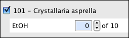

Accessions, Permits, Loans, Gifts, Exchages In and Out, Borrows and Information Requests are all found in Interactions. Access Interaction Forms by clicking the  Interactions button. A list of forms will appear in the Sidebar.
Interactions button. A list of forms will appear in the Sidebar.
Note: If an Interactions button is not available on the Taskbar choose Specify > Preferences >  Taskbar, then click the Interactions checkbox.
Taskbar, then click the Interactions checkbox.
Specify 6 ships with the most frequently used forms listed on the Sidebar.
A Form Configuration allows the Sidebar and More Forms lists to be interchanged and rearranged:
Right-button-click in the right-side of the Sidebar to open the Form Configuration tool, then click on the  button.
button.
Note: Deleting a form from either the Sidebar or Extra Forms list will place it back in the master list which is accessed by the  (add) button.
(add) button.
Interactions forms can be activated by either clicking them in the Sidebar. Gifts, Loans or Information Exchange will also activate by dropping a Collection Object Record Set onto them in the Sidebar.
Unique Forms
Creating Gifts and Loans
Loans and Gifts both document items leaving the institution and are therefore created from Preparations. The first step in creating either a Loan or Gift is choosing the Preparations for the transaction.
If any Record Sets are available a prompt will appear to choose to either enter Catalog Numbers or use a Record Set.
A dialog listing the Preparations for each Catalog Number will appear.

Returning Loans
Preparation counts must be updated when Loans are returned.
Loans are returned into Loan Return Prep forms. Partial loans can be returned by creating a new Loan Return Prep and editing the quantities loaned, returned or resolved.
When returning a large number of loans it is best to click the Return Loan button. This offers a view of all current quantities and automatically creates a Loan Return Prep.
Important notes about Returning Loans:
Information Request
Collection Managers often share data with each other for a variety of reasons, Information Requests have been created to expedite this process. The information shared will involve at least one Collection Object, if several Collection Objects are required it may be easiest to create a Record Set from either a Simple Search or Query. Then create the Information Request:
If any Record Sets are available a prompt will appear asking if the Catalog Numbers will be entered or taken from the Record Set.
The preparations from the Catalog Numbers or Record Set will appear in the Information Request form.
An important feature of the Information Request is the Send Email on Save button. When the Save button is clicked Specify will pop-up an email dialog. If the Agent record includes an email the address will automatically be included in the pop-up. If the local email account is not set up properly the email will not be sent.
Information Requests are not included in the Specify Schema, are not saved in the database and are not searchable. Saved Information Requests are listed on the Interactions Sidebar. To delete an Information Requests simply drag and drop it into the trash can on the Sidebar. There will be record of deleted Information Requests.
Borrows
Specimens that are on on loan from another collection can be tracked in Specify by creating a Borrow. Borrows never become part of your collection and therefore the forms and data will not be entered into any Collection Object fields or related fields. Borrows must be given an Invoice Number.
Exchange In / Exchange Out
The Exchange In / Exchange Out feature of Specify 6 is meant to provide a general description of the materials being exchanged, it is not meant to give an itemized list of exchange items. The Agent sending the exchange and the agent cataloging the exchange are the only fields that are required.